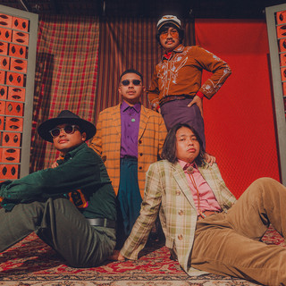
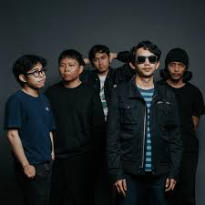
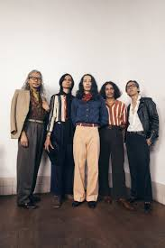

The Panturas adalah band surf rock kontemporer asal Jatinangor, Jawa Barat, yang dibentuk pada 2015-2016 oleh Abyan Nabilio (vokal/gitar), Rizal Taufik (gitar), Bagus Patria (bass), dan Surya Fikri (drum). Dikenal dengan nuansa musik pesisir meski berasal dari dataran tinggi, mereka terinspirasi oleh band surf rock klasik seperti The Ventures.
Watch This
The Jeblogs adalah band rock alternatif asal Klaten, Jawa Tengah, yang terbentuk pada 2016 dari perkumpulan pemuda [Karang Taruna Galur Manggala, Desa Jeblog. Didirikan untuk memeriahkan acara 17 Agustus, band ini berawal dari empat anggota: Amir M (vokal) Valentino Mahoni (gitar), Dani Ardian (drum), dan Ryan Ramadhan (bass), yang kini berkembang menjadi kuartet dengan tambahan gitaris.
Watch This
The S.I.G.I.T (The Super Insurgent Group of Intemperance Talent) adalah band hard rock/garage rock asal Bandung yang terbentuk sekitar tahun 1997-2002. Berawal dari nongkrong bareng saat SMA, mereka terinspirasi musik 70-an, merilis EP pada 2004, dan dikenal dengan lagu-lagu orisinal yang bertenaga
Watch This